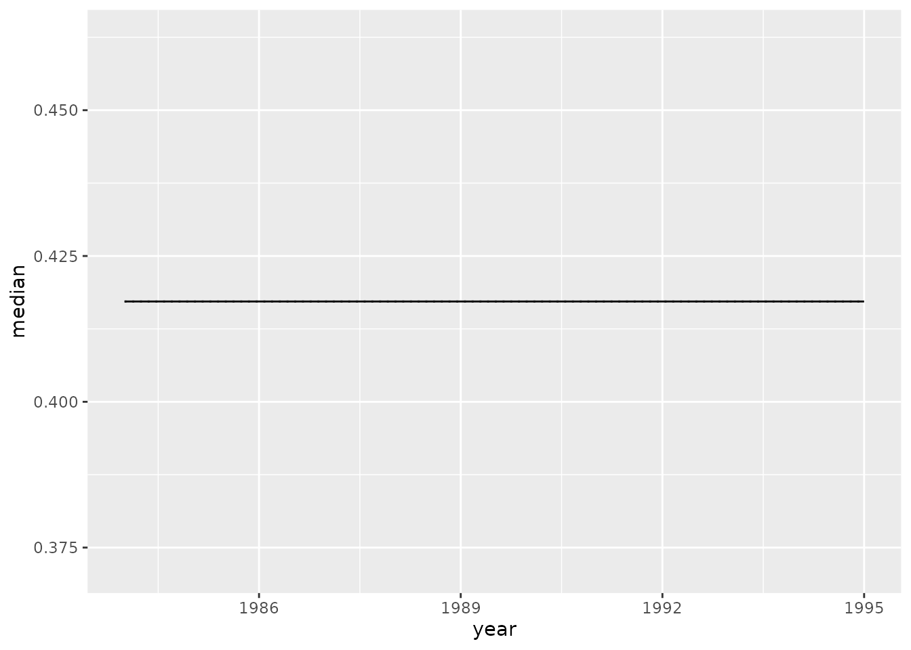
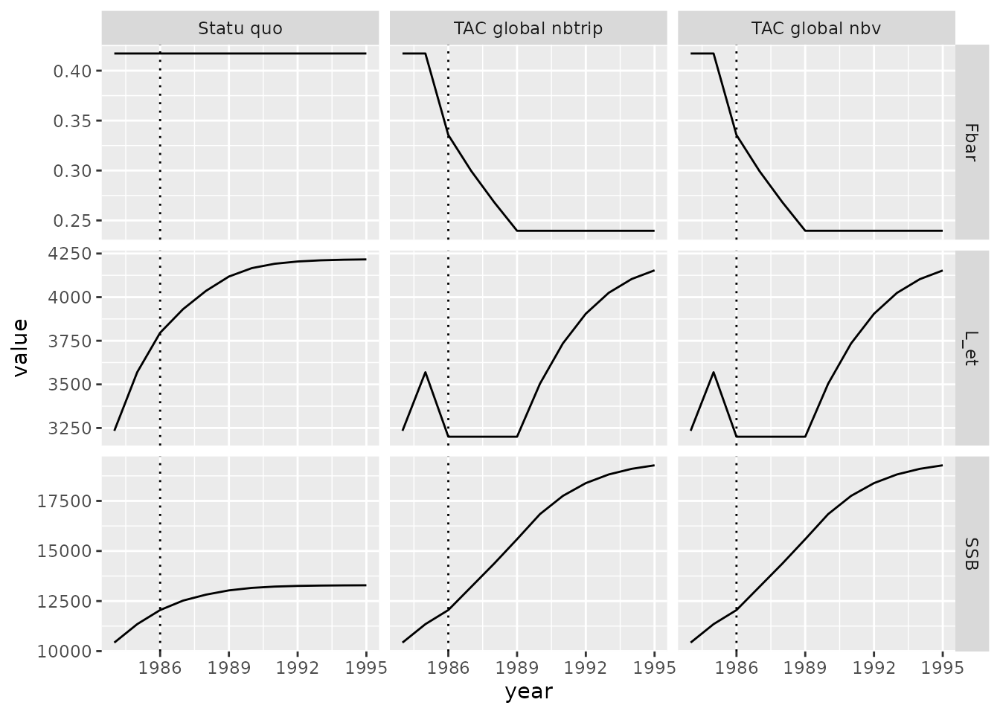
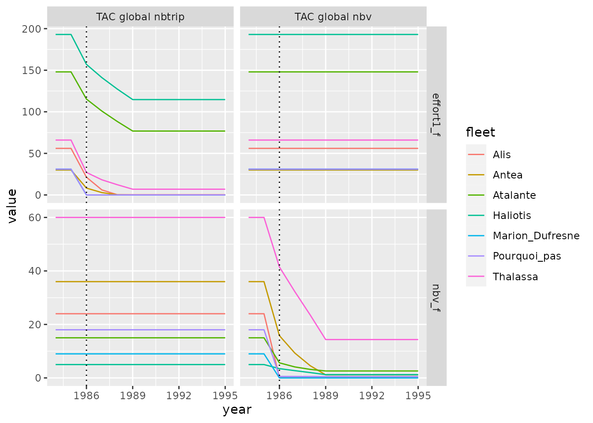
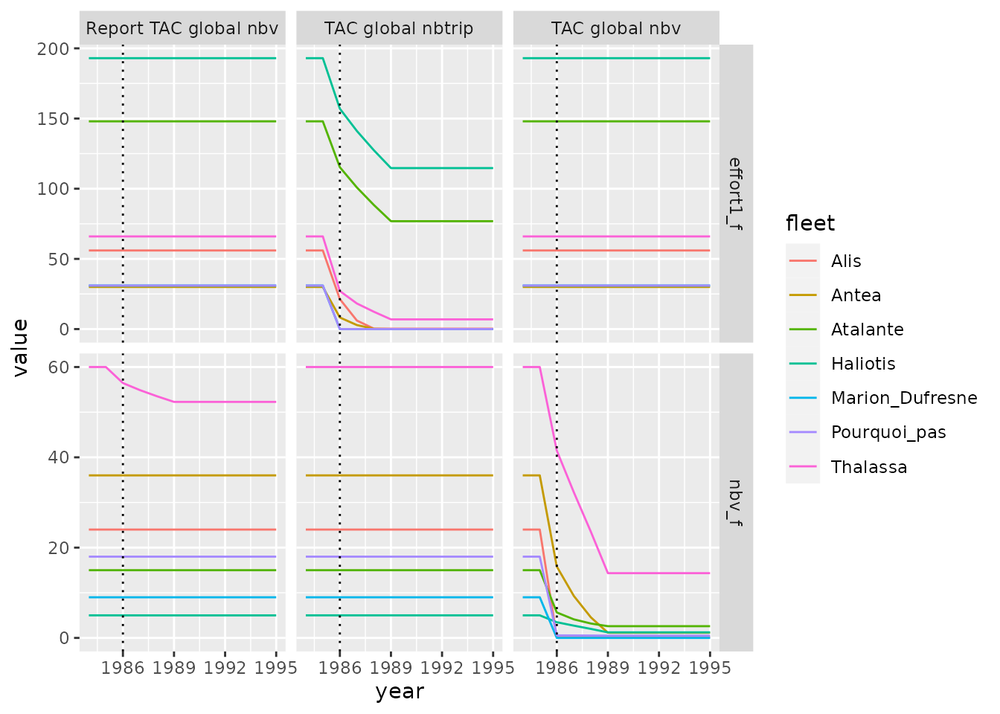
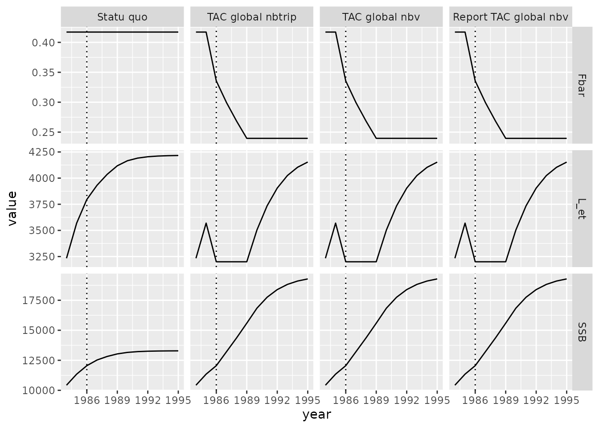

# Dépendances pour l'analyse des données et les représentations graphiques.
library(magrittr)
library(ggplot2)
library(dplyr)
library(IAM)Le modèle bio-économique IAM a été développé dans l’optique d’être utilisé pour des scénarios de gestion de quotas. Ainsi, des scénarios de Gestion par TAC peuvent être introduit à différentes échelles. Ce document traite de la gestion de TAC à un niveau interflotilles puis une autre partie détaillera la gestion intra flotilles.
L’ensemble de ces simulations sera réalisé avec le jeu de donnée example Ifremer composé de 7 flotilles et deux 3 espèces dynamiques dont une espèce à dynamique SS3.
library(IAM)
load(IAM_example("IAM_SS3_1984.RData"))
IAM_input_1984 <- IAM::IAM.input(
fileIN = IAM_example("inputFile.xlsx"),
t_init = 1984, nbStep = 12, folderFleet = IAM_example("fleets"),
Fq_i = list(DAR = iniFq_i), iniFq_i = list(DAR = iniFq_i),
Fq_fmi = list(DAR = iniFq_fmi), iniFq_fmi = list(DAR = iniFq_fmi),
FqLwt_i = list(DAR = iniFqLwt_i), iniFqLwt_i = list(DAR = iniFqLwt_i),
FqLwt_fmi = list(DAR = iniFqLwt_fmi), iniFqLwt_fmi = list(DAR = iniFqLwt_fmi),
FqDwt_i = list(DAR = iniFqDwt_i), iniFqDwt_i = list(DAR = iniFqDwt_i),
FqDwt_fmi = list(DAR = iniFqDwt_fmi), iniFqDwt_fmi = list(DAR = iniFqDwt_fmi),
Nt0s1q = list(DAR = Nt0s1q), Ni0q = list(DAR = Ni0q),
iniNt0q = list(DAR = iniNt0q), matwt = list(DAR = mat_morphage)
)
summary(IAM_input_1984)
#> My Input (IAM input) :
#> Simulation of 3 dynamic species, 19 static species and 7 fleet
#> Simulation start in 1984 and end in 1995 (12 steps)
#>
#> ------------------------------------
#> Dynamic Species | Model | Ages |
#> ARC | XSA | 0 to +gp |
#> COR | XSA | 2 to +gp |
#> DAR | SS3 | 0 to +gp |
#> ------------------------------------
#> Fleet | nbv |
#> Alis | 24 |
#> Antea | 36 |
#> Atalante | 15 |
#> Haliotis | 5 |
#> Marion_Dufresne | 9 |
#> Pourquoi_pas | 18 |
#> Thalassa | 60 |L’objet argument est laissé tel quel lors de l’utilisation de l’interface et sera édité à la main plus tard pour chaque scénario.
IAM_argum_1984 <- IAM.args(IAM_input_1984)Cela revient à initialiser un objet de classe iamArgs sans passer par l’interface avec la commande suivante :
IAM_argum_1984 <- IAM.input2args(IAM_input_1984)Besoin d’un scénario statu quo
Afin de pouvoir comparer l’effet de chaque scénario, il nous faut un scénario de départ dans lequel aucune mesure de Gestion s’imposera.
Dans un premier temps il est utile de définir les dynamiques de recrutements ainsi que des éléments de paramétrage du module économique. On va pour cela éditer l’objet IAM_argum_1984.
# Module SR
# TODO add boken stick Rec..where is the value ?
# Add noise to COR
IAM_argum_1984@arguments$Recruitment$COR$wnNOISEmodSR <- 100
# Module EcoDCF
IAM_argum_1984 <- IAM.editArgs_Eco(IAM_argum_1984, dr = 0.04, perscCalc = 1)
# Module Gestion
mfm <- with(IAM_input_1984@input$Fleet,{
(effort1_f_m * effort2_f_m * nbv_f_m) / as.vector(effort1_f * effort2_f * nbv_f)
})
mfm[is.na(mfm)] <- 0
IAM_argum_1984 <- IAM.editArgs_Gest(IAM_argum_1984, active = FALSE,
delay = 1, mfm = mfm)
# Module Scenario
IAM_argum_1984 <- IAM.editArgs_Scenar(IAM_argum_1984) # desactivate scenario
summary(IAM_argum_1984)
#> My Input (IAM argument) :
#> Simulation of 3 dynamic species, 19 static species and 7 fleet
#> Simulation start in 1984 and end in 1995 (12 steps)
#>
#> =======================================================================================
#> SR module | Stock Recruitment | Noise | Proba |
#> ---------------------------------------------------------------------------------------
#> Species | function : param A ; param B ; param C | Type : sd | Type |
#> ARC (XSA) | Mean 3.641e+07 0.00e+00 0.00e+00 | Norm | 0.00e+00 | . |
#> COR (XSA) | Mean 1.893e+07 0.00e+00 0.00e+00 | Norm | 1.00e+02 | . |
#> DAR (SS3) | not activated 0.000e+00 0.00e+00 0.00e+00 | Norm | 0.00e+00 | . |
#> ---------------------------------------------------------------------------------------
#>
#> The Gestion module is not active.
#>
#> ============================================================
#> Economic : PerscCalc = 1 ; dr = 0.040 | No replicates |
#> ------------------------------------------------------------
#>
#> The Scenario module is not active.Je choisis de simuler tout mes scénarios avec des réplicats, qui est fixé ici par N
N = 10
sim_statu_quo <- replicate(N, {
IAM::IAM.model(objArgs = IAM_argum_1984, objInput = IAM_input_1984)
})
Fbar_sq_l <- lapply(1:N, function(x) {
IAM.format(sim_statu_quo[[x]], name = "Fbar", sim_name = "SQ", n = x)
})
Fbar_sq <- do.call(rbind,Fbar_sq_l) %>%
filter(species == "COR") %>%
IAM.format_quant(., probs = c(.025, .975))
Fbar_sq %>%
ggplot(aes(x = year, y = median)) +
geom_ribbon(aes(ymin = quant1, ymax = quant2), fill = "lightblue") +
geom_line(aes(y = value), linetype = "dotted") +
geom_line() +
NULL
Gestion TAC générale
Les différentes options de réglages du module Gestion sont exposées dans la vignette “Utilisation IAM dans R”. Il s’agit ici de les explorer plus en avant et de les utiliser.
On fixe ici un scénario de Gestion qui va agir sur le nombre de navire afin d’atteindre un TAC (Total allowable catches) donné pour chaque année. Ce quotas vise particulièrement l’espèce dite “COR” et rentre en application 2 ans après le début de la simulation, soit en 1986. Les modification d’efforts seront multiplicatives.
IAM_argum_1984_TACnbv <- IAM.editArgs_Gest(
IAM_argum_1984, active = TRUE, control = "Nb vessels", target = "TAC",
espece = "COR", delay = 2, type = "x", bounds = c(100, -100), # X2 a -100 entraine des flottes a 0 navires !
tac = c(NA, NA, rep(3200, 10)))
# 84, 85, 1986:1995
sim_TACglob_nbv <- replicate(N, {
IAM::IAM.model(objArgs = IAM_argum_1984_TACnbv, objInput = IAM_input_1984)
})Cette simulation permet de diminuer drastiquement la mortalite par pêche de l’espèce dite “COR” avec une reduction immédiate la taille des flottilles.
Une autre variable d’ajustement de l’effort est le nombre voyage en mer des navires.
IAM_argum_1984_TACnbds <- IAM.editArgs_Gest(
IAM_argum_1984_TACnbv, active = TRUE, control = "Nb trips"
)
sim_TACglob_nbt <- replicate(N, {
IAM::IAM.model(objArgs = IAM_argum_1984_TACnbds, objInput = IAM_input_1984)
})Représentations graphiques
On peut aisement comparer les différents scénarios avec des fonctions graphiques. Ainsi on observe que nos scénarios de TAC arrivent tout deux à la reconstruction progressive du stock “COR” par une baisse de la mortalité par pêche (Fbar).
TACglobv_nbv_l <- lapply(1:N, function(x) {
IAM.format(sim_TACglob_nbv[[x]], name = "summary",
sim_name = "TAC global nbv", n = x)
})
TACglobv_nbt_l <- lapply(1:N, function(x) {
IAM.format(sim_TACglob_nbt[[x]], name = "summary",
sim_name = "TAC global nbtrip", n = x)
})
Statuquo_l <- lapply(1:N, function(x) {
IAM.format(sim_statu_quo[[x]], name = "summary",
sim_name = "Statu quo", n = x)
})
COR <- do.call(rbind, c(Statuquo_l, TACglobv_nbt_l, TACglobv_nbv_l)) %>%
filter(species == "COR", variable %in% c("Fbar", "SSB", "L_et")) %>%
IAM.format_quant(., probs = c(.025, .975))
COR %>%
ggplot(aes(x = year, y = value)) +
facet_grid(variable ~ sim_name, scales = "free_y") +
geom_ribbon(aes(ymin = quant1, ymax = quant2), fill = "lightblue") +
geom_line() +
geom_vline(xintercept=1986, linetype = "dotted") +
NULL
Cependant, ces scénarios entrainent de fortes réductions d’effort car ils ne ciblent pas les métiers et flottilles impactant le plus le stock cible. Ainsi on observe que les variables ajustées lors des scénarios arrivent vite proche de valeurs nulles.
variables <- c("nbv_f", "effort1_f")
TACglobv_nbv_l <- lapply(1:N, function(x) {
IAM.format(sim_TACglob_nbv[[x]], name = variables,
sim_name = "TAC global nbv", n = x)
})
TACglobv_nbt_l <- lapply(1:N, function(x) {
IAM.format(sim_TACglob_nbt[[x]], name = variables,
sim_name = "TAC global nbtrip", n = x)
})
TACglob_effort <- do.call(rbind, c(TACglobv_nbv_l, TACglobv_nbt_l)) %>%
IAM.format_quant(., probs = c(.025, .975))
TACglob_effort %>%
ggplot(aes(x = year, y = value, color = fleet )) +
facet_grid(variable ~ sim_name, scales = "free_y") +
geom_line() +
geom_vline(xintercept=1986, linetype = "dotted") +
NULL
Pondérer les efforts avec la matrice mfm
Ces réductions drastiques peuvent être limitées en ciblant les flottilles et les métiers. Par exemple, l’espèce ciblé est pêchées à 97.0259956 % par la flottille dite “Thalassa”, via le métier “Filet_COR”. Il serait donc plus intéressant de diminuer l’effort sur cette flottille uniquement.
Pour cela on peut agir sur la pondération des métiers et indiquer que l’on diminiue l’effort des métiers “Filet_COR” pour les flottilles qui l’utilisent au profit du méthier “Filet_DP”. Il s’agit d’un report d’effort par métier.
trg_f <- c("Thalassa", "Haliotis")
mfm <- with(IAM_input_1984@input$Fleet,{
(effort1_f_m * effort2_f_m * nbv_f_m) / as.vector(effort1_f * effort2_f * nbv_f)
})
mfm[!is.na(mfm)] <- 0 #report d'effort du m?tier 'Filet_COR' vers 'Filet_DP'
mfm[trg_f,"Filet_DP"] <- with(IAM_input_1984@input$Fleet,
Lref_f_m[trg_f,"Filet_DP"] / sum(Lref_f_m[trg_f,"Filet_DP"])
)
mfm[trg_f,"Filet_COR"] <- with(IAM_input_1984@input$Fleet,
- Lref_f_m[trg_f,"Filet_DP"] / sum(Lref_f_m[trg_f,"Filet_DP"])
)
mfm
#> Filet_DAR Filet_DP Chalut_fond_DP Chalut_fond_GLY
#> Alis 0 0.00000000 NA NA
#> Antea NA NA 0 0
#> Atalante NA NA 0 NA
#> Haliotis NA 0.05556576 NA NA
#> Marion_Dufresne NA NA NA NA
#> Pourquoi_pas NA NA NA NA
#> Thalassa 0 0.94443424 NA NA
#> Chalut_fond_CEP Chalut_pelagique_DP Chalut_fond_COR Autres
#> Alis NA NA NA NA
#> Antea NA NA NA NA
#> Atalante 0 0 0 0
#> Haliotis NA NA NA 0
#> Marion_Dufresne NA NA NA NA
#> Pourquoi_pas NA NA NA NA
#> Thalassa NA NA NA 0
#> Filet_COR Palangre_DP Palangre_DAR
#> Alis NA NA NA
#> Antea NA NA NA
#> Atalante NA NA NA
#> Haliotis -0.05556576 0 NA
#> Marion_Dufresne NA NA 0
#> Pourquoi_pas NA 0 0
#> Thalassa -0.94443424 NA NA
#> attr(,"DimCst")
#> [1] 7 11 0 0
IAM_argum_1984_TACnbvR <- IAM.editArgs_Gest(IAM_argum_1984_TACnbv, mfm = mfm)
sim_TACglob_nbvR <- replicate(N, {
sim_TACreport <- IAM::IAM.model(objArgs = IAM_argum_1984_TACnbvR, objInput = IAM_input_1984)
})Il est tout à fait possible de rajouter aux précédents scénrarios déjà simuler pour avoir un moyen de comparaison. Il faut cependant éviter de rajouter les objets à la suite avec rbind comme cela, car R utilise beaucoup plus de mémoire pour cela. On remarque ainsi qu’on obtient une plus faible réduction d’effort sur le nombre de navire pour les mêmes résultats au niveau du stock.
variables <- c("nbv_f", "effort1_f")
# Extraction des variables.
TACglob_nbvR_l <- lapply(1:N, function(x) {
IAM.format(sim_TACglob_nbvR[[x]], name = variables,
sim_name = "Report TAC global nbv", n = x)
})
# Calcul des quantiles et ajout aux simulations précédentes.
TACglob_effort <- do.call(rbind, c(TACglob_nbvR_l)) %>%
IAM.format_quant(., probs = c(.025, .975)) %>%
rbind(., TACglob_effort)
TACglob_effort %>%
ggplot(aes(x = year, y = value, color = fleet )) +
facet_grid(variable ~ sim_name, scales = "free_y") +
geom_line() +
geom_vline(xintercept=1986, linetype = "dotted") +
NULL
TACglobv_nbvR_l <- lapply(1:N, function(x) {
IAM.format(sim_TACglob_nbvR[[x]], name = "summary",
sim_name = "Report TAC global nbv", n = x)
})
COR <- do.call(rbind, c(TACglobv_nbvR_l)) %>%
filter(species == "COR", variable %in% c("Fbar", "SSB", "L_et")) %>%
IAM.format_quant(., probs = c(.025, .975)) %>%
rbind(., COR)
COR %>%
mutate(sim_name = factor(sim_name, levels = c( # Reorder the column in plot
"Statu quo", "TAC global nbtrip", # by setting level order
"TAC global nbv", "Report TAC global nbv"))) %>%
ggplot(aes(x = year, y = value)) +
facet_grid(variable ~ sim_name, scales = "free_y") +
geom_ribbon(aes(ymin = quant1, ymax = quant2), fill = "lightblue") +
geom_line() +
geom_vline(xintercept=1986, linetype = "dotted") +
NULL